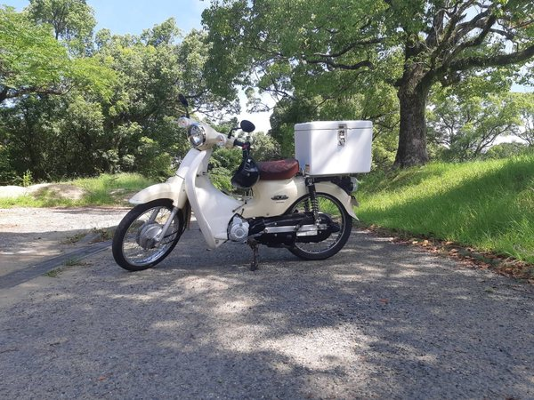

緒方 颯斗
Hayato Ogata
九州大学大学院 理学府 物理学専攻
粒子系理論物理学研究室 · 博士課程1年
専門は素粒子理論です。
News
- QCoder Programming Contest 007で31位になりました。
- Cuter News 11月号にノーベル物理学賞の解説記事を執筆しました。
- IBM「Fundamentals of Quantum Algorithms」オープンバッジを取得しました。
研究
初期宇宙の相転移を研究しています。
研究概要・修士論文・発表量子コンピューティング
量子コンピューティングを学びながら、関心のあるテーマを探っています。
NEDO事業「専門人材育成プログラム」を受講中です。量子プログラミングにも取り組んでいます。
フェローシップ
K²-SPRING 採用
九州大学「未来を拓く博士人財育成プログラム」に採用されました。選考では、自ら立てた研究計画やその独創性が審査されます。現在は研究奨励費と研究費の支援を受け、素粒子理論の研究に取り組んでいます。
連絡先
ogata.hayato.576[a]s.kyushu-u.ac.jp
送信時は [a] を @ に置き換えてください。
